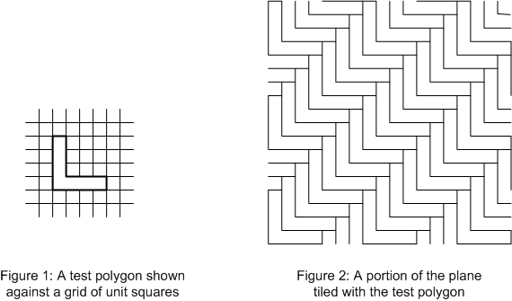

ICPC World Finals 2005 · Problem G
A polygon is said to “tile the plane” if a collection of identical copies of the polygon can be assembled to fill an unbounded two-dimensional plane without any gaps or overlap. For example, Figure 1 shows an L-shaped polygon, and Figure 2 shows how a portion of the plane can be tiled with copies of the polygon. You must write a program to determine whether a given polygon can tile the plane.

Each test case consists of a closed polygon in which every vertex is at a right angle and the length of every side is an integer multiple of a unit length. You may make as many copies of the polygon as you like, and you may move them over the plane, but you may not rotate or reflect any polygon.
You might find the following information useful: It is known that there are only two fundamentally different tilings of the plane, the regular tiling by squares (chessboard tiling) and the tiling by regular hexagons (honeycomb tiling). A polygon can therefore tile the plane if and only if it satisfies one of the following two conditions:
The input contains the descriptions of several polygons, each description consisting of one input line. Each description begins with an integer n (4 ≤ n ≤ 50) that represents the number of sides of the polygon. This number is followed by descriptions of n line segments which (taken in order) form a counterclockwise traversal of the perimeter of the polygon. Each line segment description consists of a letter followed by an integer. The letter is “N”, “E”, “S”, or “W”, representing the direction of the line segment as North, East, South, or West, respectively. The integer represents the length of the line segment as a multiple of the unit length. The described polygon will not touch or intersect itself.
The input is terminated by a line consisting of the integer zero.
For each polygon in the input, print one output line. Print the number of the polygon in the input, followed by the word “Possible” if it is possible to tile the plane with the test polygon, or “Impossible” otherwise. Follow the format of the sample output.
6 N 3 W 1 S 4 E 4 N 1 W 3 8 E 5 N 1 W 3 N 3 E 2 N 1 W 4 S 5 0
Polygon 1: Possible Polygon 2: Impossible